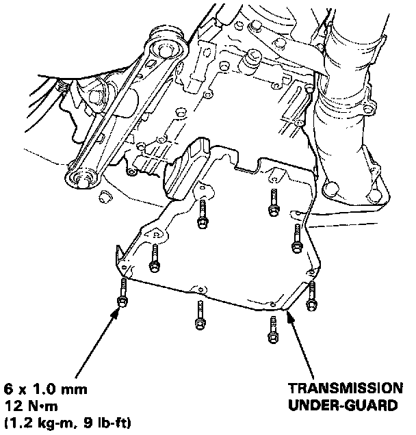
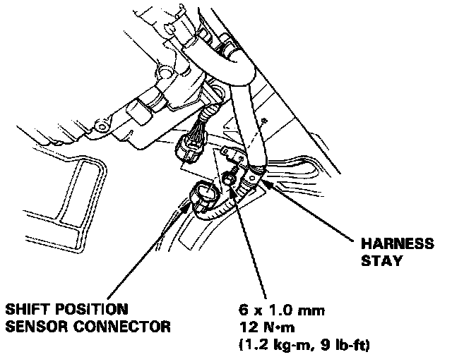
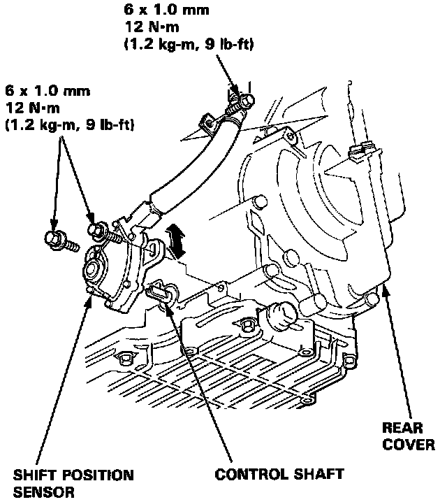
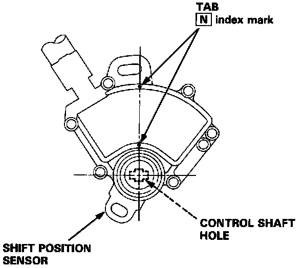
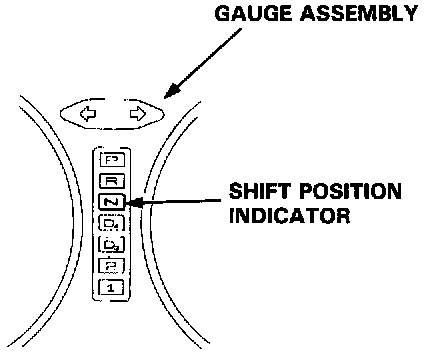

Transmission Position Sensor/Switch: Service and Repair
Shift Position Sensor ReplacementWARNING: Make sure lifts. jacks and safety stands are placed properly.
1. Raise the car.
2. Shift the select lever to (N) position.

3. Remove the transmission under-guard.

4. Disconnect the shift position sensor connector then remove the harness stay.

5. Remove the 6 mm bolt from the rear cover. Remove the 2 bolts then remove the shift position sensor from the control shaft.

6. Set the shift position sensor to (N) position as shown.
NOTE: The shift position sensor clicks in (N) position.
7. Install the shift position sensor in the reverse order of removal.
NOTE:
- Verify the control shaft is in the (N) position.
- Put the shift position sensor in the control shaft.
8. Check the shift position sensor and the shift position indicator.

9. Move the select lever through all gears, and verify that the shift position indicator follows the shift position sensor.
10. Start the engine and check the shift lever through all gears.